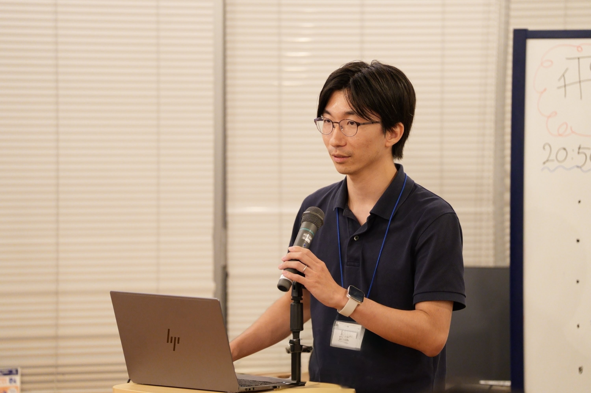

愛知県名古屋市のエンジニアです。業務システムを自分の手で設計して作る仕事を 8 年続けてきました。
近年はそこに生成 AI を組み込み、仕事のカイゼンも含めた提案をしています。自動車の設計現場では、調べものの時間を約 70% 削減しました。作ったあとも、現場で使われる様子を見ながら直し続けています。
「まず小さく作って、見てもらう」 — 大きな計画書より先に、動くものを小さく作ってお見せします。実際に触っていただいてから、広げるかどうかを決められます。
「入れて終わりにせず、直し続ける」 — 導入したあとも、現場の声を聞きながら直し続けます。設計現場の 70% 削減も、この繰り返しで実現しました。
「現場を知る担当者と二人三脚」 — 業務を一番よく知るのは現場の担当者の方です。その方と一緒に進めることで、実際の仕事に合った形にします。40 件の業務改善もすべてこの進め方で作りました。
Microsoft MVP for Microsoft Foundry（2026年6月 受賞）
生成 AI 分野での継続的な技術発信と勉強会への貢献が Microsoft に評価されました。
オンライン動画講座（Udemy）
生成 AI・AI 活用の導入経験を教材化。累計受講者 6,700 名以上・講座 11 本・平均評価 4.2★
技術ブログ（Zenn）
生成 AI に関する技術記事を継続発信中。
▸ zenn.dev/nomhiro
勉強会・コミュニティ活動
名古屋を中心に、生成 AI 活用の実践知識を勉強会で発表しています。
Azure ネイティブなバックエンドエンジニアとして 6 年。Java・Next.js・Python を主軸に
App Service・Functions・Cosmos DB・Service Bus・AKS を活用したシステム開発を経験。
近年は 生成 AI の実業務組み込みに注力。既存システムへの自然な統合・RAG・AI エージェント設計から
本番運用まで一貫して担います。自動車設計の現場での AI 活用は
Microsoft 公式グローバル事例に掲載されました。
Udemy 動画講座
Azure / 生成 AI / AI エージェントの実装経験を教材化。累計受講者 6,700 名以上・コース 11 本・レビュー 1,028 件・平均評価 4.2★
技術ブログ（Zenn）
Azure サービス・生成 AI に関する PoC 記事を継続発信。RAG・Semantic Kernel・AI Foundry が主なテーマ。
▸ zenn.dev/nomhiro
コミュニティ
トヨタ自動車パワートレーン領域向けの、エンジニアの集合知を蓄積・活用するマルチエージェント基盤。 アイデア出しからアーキテクチャ設計・開発までスクラムマスター兼開発者として主導し、 Microsoft のグローバル事例として掲載。 ▸ Microsoft News
自動車設計の現場向けに、図・表を含む多様な社内文書をデータ化。チャット UI に加えて 既存業務システムへ生成 AI を組み込み、お客様の調査工数を約 7 割削減。 案件責任者・スクラムマスターとして 12 名の開発チームを主導。
Hub & Spoke 構成のセキュアな社内 Azure 基盤を要件定義から構築・運用まで担当（案件副責任者）。 AKS（KEDA）と Queue Storage・Functions・Cosmos DB を組み合わせ、 ジョブ数やライセンス数を加味した実行制御を行う Simulation ジョブ基盤を実装。
Oracle WebLogic 上の Java アプリをコンテナ化し、Azure Red Hat OpenShift へ移行。 Jenkins による CD パイプラインを構築し、既存の開発チームへコンテナを使った開発プロセスを教育。